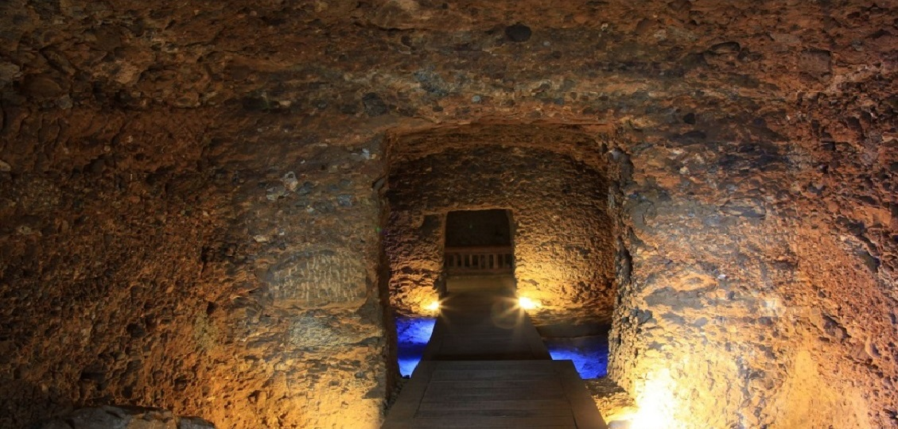

Amisos Tepesi

Amisos'un kuruluşu ve gelişmesi tarihi kaynaklara ve arkeolojik verilere göre başlıca dört aşamada
gerçekleşmiştir.
1.Dönem (MÖ 6'ncı yüzyılın başı): Sinop'ta bir koloni oluşturan Miletoslular'ın küçük bir yerleşim olan
Amisos'a egemen olup Karadeniz ile Anadolu'nun içlerini bağlayan ticaret yolunun başlangıcı olarak
kullanılması.
2.Dönem (MÖ 6'ncı yüzyılın ilk yarısı): Kapadokyalılar'ın Amisos'a yerleşmesi.
3.Dönem (MÖ 6'ncı yüzyıl ortası): Kapadokyalı liderin Foçalılar'a yerleşme izni vermesi ve kentin büyüyüp
gelişmesi.
4. Dönem (MÖ 437): Sinop’tan gelen Atinalılar'ın Amisos'a yerleşmesi ve kentin adının Peiraieos olarak
değiştirilmesi.
Miletoslular, Toraman Tepe sırtlarında kent surlarını yapmış, caddeler, sokaklar, meydanlar oluşturmuş, dini yapılar ve evler kurmuşlardır. Tepenin doğusunda liman vardır. Buluntular, limanın gerisinde bir Aşağı Kent kurulduğunu göstermektedir. Buluntulara göre Toraman Tepe'nin sırtında kurulan Yukarı Kent'in 44 hektarlık bir alanı kapsadığı söylenebilir. Kentin doğu, batı ve güneyindeki yamaçlar mezarlık olarak kullanılmıştır. Yukarı Kent yönetici, asker, tüccar, din adamları, toprak sahipleri gibi varlıklı sınıfların yaşadığı yerdir. Liman yakınındaki Aşağı Kent’te ticari depolar ve limanda çalışan denizciler, köleler ve diğer çalışanlar vardır. Malları Anadolu'nun içlerine götüren arabalar ve katırların ahırları, görevlilerin barınakları da buradadır.
2004 yılında başlatılan kurtarma kazılarıyla birlikte Baruthane Tümülüsleri olarak adlandırılan iki yığma tepenin altından mezarlar ortaya çıkarılmıştır. Baruthane Tümülüsleri'nin Mitridates sülalesinin hüküm sürdüğü Helenistik Dönem’de yapıldığı anlaşılmaktadır. Samsun Müzesi ile İstanbul Üniversitesi’nin birlikte yürüttüğü bilimsel kazıların sonunda iki ayrı mezar ortaya çıkarılarak ziyarete açılmıştır.
İlkadım ilçesi Cedit Mahallesi'nde yapılan bir kurtarma kazısında Amisos Dönemi’ne ait bir aile mezarı ve bu aileye ait hazine ortaya çıkarılmıştır. Mezardan çıkarılan buluntular, Samsun Arkeoloji ve Etnografya Müzesi'nin en değerli koleksiyonlarından birini oluşturmaktadır. Amisos'ta nasıl bir yaşam zenginliği olduğunu da gösteren bu altın ziynet eşyaları (ölü armağanları), çanak-çömlek, cam ve mermerden yapılmış arkeolojik eserlerin incelenmesinden, erkek mezarının Pontus Krallığı’nın en üst düzeydeki yöneticilerinden birine, diğer mezarların da bu kişinin eşi ve kızına ait olduğu düşünülmektedir. Mezarda bulunan toprak, cam, metal ve mermer eserler MÖ 4'üncü yüzyıla tarihlenmiştir.
Miletoslular, Toraman Tepe sırtlarında kent surlarını yapmış, caddeler, sokaklar, meydanlar oluşturmuş, dini yapılar ve evler kurmuşlardır. Tepenin doğusunda liman vardır. Buluntular, limanın gerisinde bir Aşağı Kent kurulduğunu göstermektedir. Buluntulara göre Toraman Tepe'nin sırtında kurulan Yukarı Kent'in 44 hektarlık bir alanı kapsadığı söylenebilir. Kentin doğu, batı ve güneyindeki yamaçlar mezarlık olarak kullanılmıştır. Yukarı Kent yönetici, asker, tüccar, din adamları, toprak sahipleri gibi varlıklı sınıfların yaşadığı yerdir. Liman yakınındaki Aşağı Kent’te ticari depolar ve limanda çalışan denizciler, köleler ve diğer çalışanlar vardır. Malları Anadolu'nun içlerine götüren arabalar ve katırların ahırları, görevlilerin barınakları da buradadır.

2004 yılında başlatılan kurtarma kazılarıyla birlikte Baruthane Tümülüsleri olarak adlandırılan iki yığma tepenin altından mezarlar ortaya çıkarılmıştır. Baruthane Tümülüsleri'nin Mitridates sülalesinin hüküm sürdüğü Helenistik Dönem’de yapıldığı anlaşılmaktadır. Samsun Müzesi ile İstanbul Üniversitesi’nin birlikte yürüttüğü bilimsel kazıların sonunda iki ayrı mezar ortaya çıkarılarak ziyarete açılmıştır.
İlkadım ilçesi Cedit Mahallesi'nde yapılan bir kurtarma kazısında Amisos Dönemi’ne ait bir aile mezarı ve bu aileye ait hazine ortaya çıkarılmıştır. Mezardan çıkarılan buluntular, Samsun Arkeoloji ve Etnografya Müzesi'nin en değerli koleksiyonlarından birini oluşturmaktadır. Amisos'ta nasıl bir yaşam zenginliği olduğunu da gösteren bu altın ziynet eşyaları (ölü armağanları), çanak-çömlek, cam ve mermerden yapılmış arkeolojik eserlerin incelenmesinden, erkek mezarının Pontus Krallığı’nın en üst düzeydeki yöneticilerinden birine, diğer mezarların da bu kişinin eşi ve kızına ait olduğu düşünülmektedir. Mezarda bulunan toprak, cam, metal ve mermer eserler MÖ 4'üncü yüzyıla tarihlenmiştir.